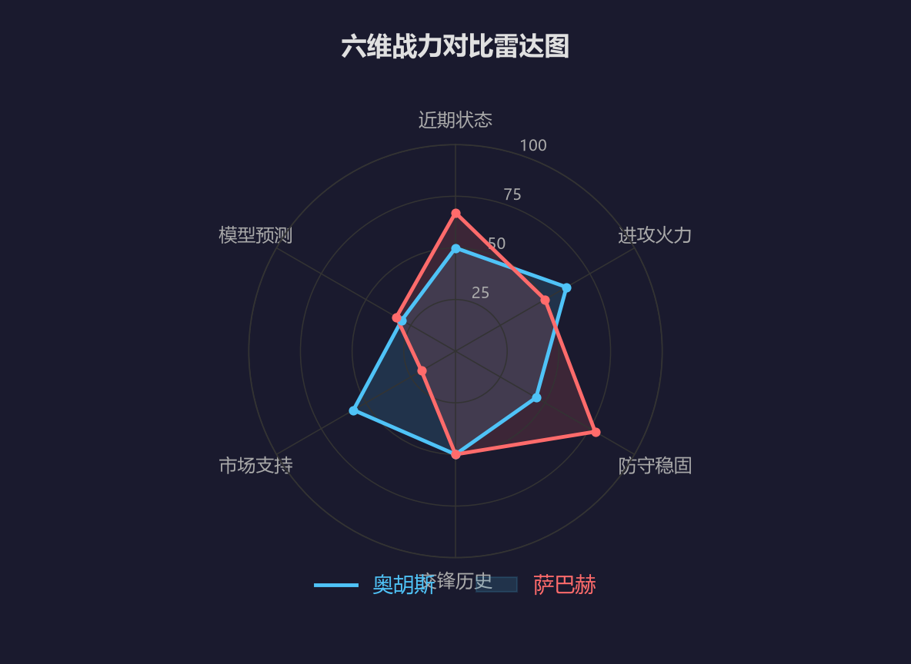
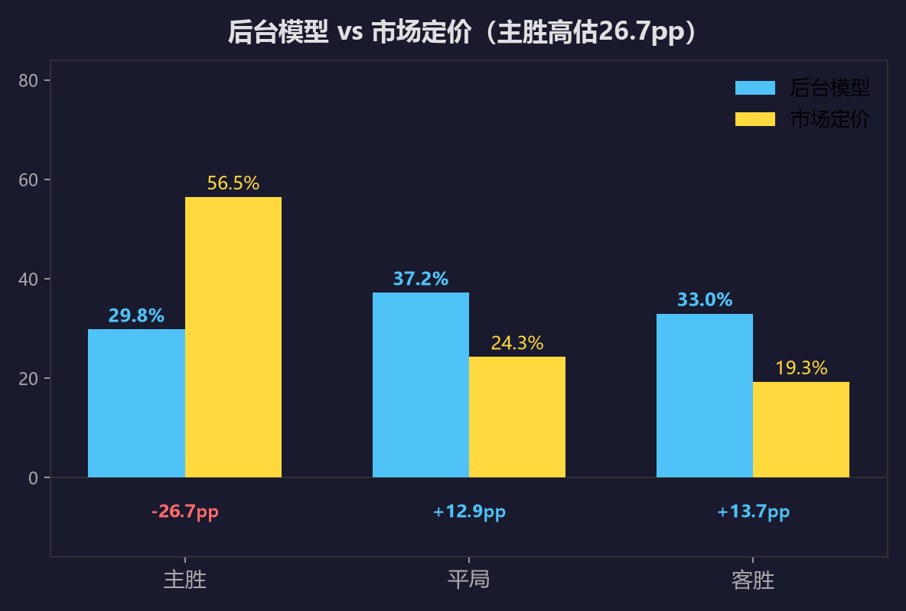
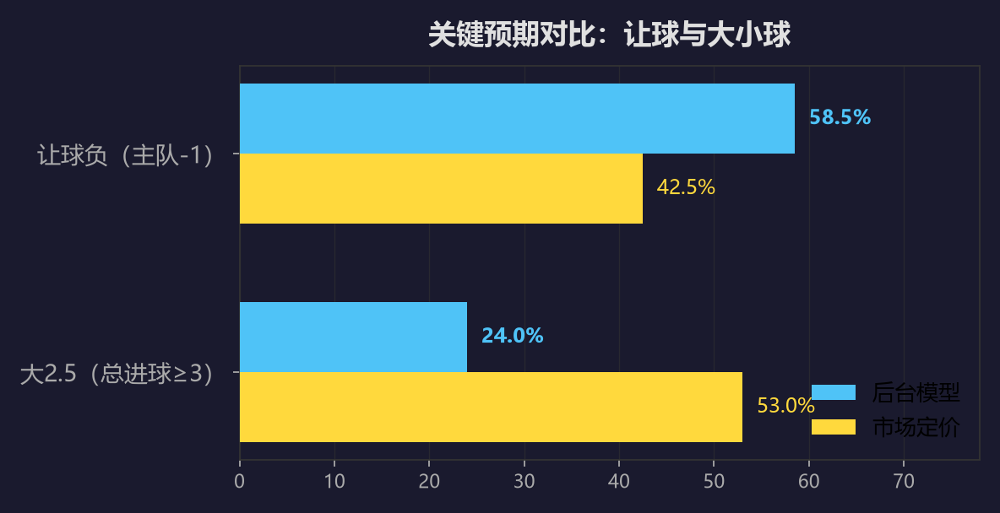
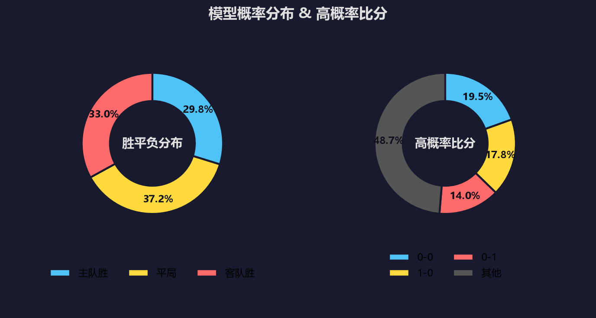
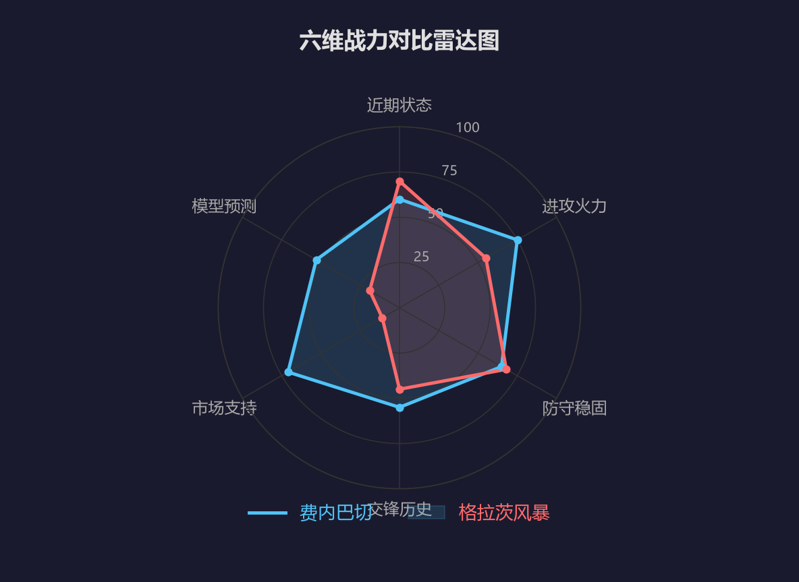
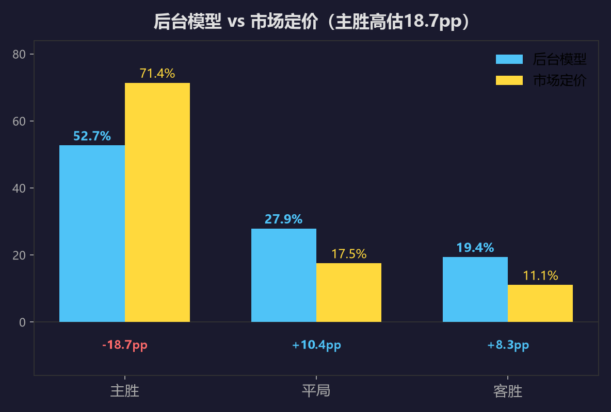
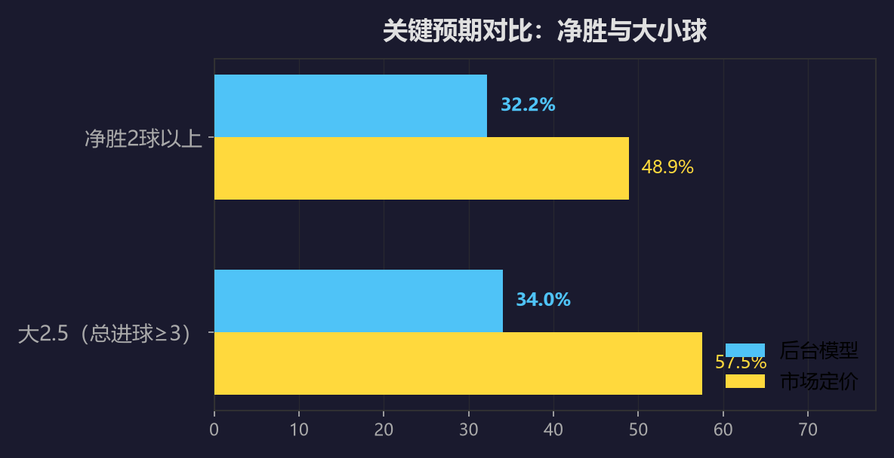
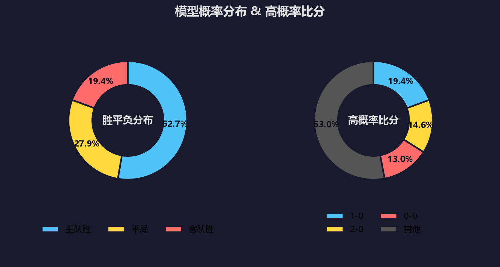

#欧冠资格赛 #欧冠杯 #奥胡斯 #萨巴赫 #费内巴切 #格拉茨风暴 #足球前瞻 #数据分析 #赛博聊球 #足球分析
数据不会说谎，但人会。——阿飞·赛博聊球
很多球迷看欧冠资格赛，习惯性先看名字和联赛。丹麦超打阿塞超，土超打奥甲，主队都是更响的那块招牌。
但周四凌晨这两场，拆开数据，味道全变了。
两场主队都被官方数据让出一球，后台模型跑完模拟，给的是同一个信号：市场高估了主队，平局和受让方向被丢在角落没人捡。
先亮结论。
奥胡斯对萨巴赫：模型主胜29.8%，平局37.2%，客胜33.0%。
费内巴切对格拉茨风暴：模型主胜52.7%，平局27.9%，客胜19.4%。
两场共同点就一句：主队赢面大，但想净胜两球，难。
| 项目 | 内容 |
|---|---|
| 赛事 | 欧冠资格赛第3轮·首回合 |
| 对阵 | 奥胡斯（中立场）vs 萨巴赫 |
| 次回合 | 08-12 萨巴赫主场（巴库） |
| 主队 | 丹麦超第7，2轮2分，两连平 |
| 客队 | 阿塞超冠军，33轮78分 |
| 重要指数 | ⭐⭐⭐⭐（欧冠资格赛生死战：中立场无退路） |
| 伤停 | 奥胡斯中锋里士满 ｜ 萨巴赫左边锋哈亚尔·阿利耶夫 |
萨巴赫是谁？
阿塞拜疆联赛冠军，听着陌生，但人家已经连赢四场欧冠资格赛：2-0、1-0、2-1、2-0，淘汰新圣徒和库奥皮奥，四场只丢一个球。
这防守是练出来的，不是撞出来的。
奥胡斯这边，丹麦超开季两连平，1-1、2-2，一场没赢。上一轮欧冠更刺激，主场1-4被波兹南莱赫打花，转头客场3-0翻回来，总比分4-4晋级。
大起大落到这种程度，机构还给1.57的主胜定价，隐含胜率56.5%。后台模型算完只有29.8%。算完第一遍我自己都不信，核了三遍还是这个数。
差在哪？中立场，主场优势直接归零；中锋里士满伤缺，前场支点没了；一周双赛，三天前刚踢完联赛。
战意：欧冠资格赛首回合，中立场没有退路——奥胡斯想先手建立优势，萨巴赫想趁热打铁把悬念留到巴库，两队的算盘都写在脸上。
对赛往绩：两队此前从未交过手，这是历史第一次碰面。
奥胡斯：控球推进，靠中锋支点做文章——里士满一伤，前场接应点直接少一个。萨巴赫：防守反击，四场资格赛只丢一球，防线是看家本领，但左路尖刀哈亚尔·阿利耶夫缺阵，反击锐度要打折扣。
克制关系：-1——萨巴赫的低位防守，正好克奥胡斯没有支点的攻坚。
奥胡斯：阿恩斯塔德（10号前锋，上轮评分7.3）——里士满缺阵后，他是唯一能顶在最前面的破门钥匙。萨巴赫：没有单点明星，整条防线就是他们的关键先生。
| 维度 | 奥胡斯 | 萨巴赫 |
|---|---|---|
| 近10场胜率 | 50%（5胜3平2负） | 60%（6胜1平3负） |
| 场均进球 | 2.29 | 1.40 |
| 场均失球 | 1.20 | 1.10 |
| 场均角球 | 4.59 | 6.60 |
| 欧冠战绩 | 1-4 / 3-0（大起大落） | 4连胜，仅失1球 |
| 同档让球赢指率 | 61.7%（81场） | 50%（18场） |

⬆ 六维战力对比：奥胡斯攻强守漏，萨巴赫防守成色更足
| 维度 | 评分 | 关键数据 |
|---|---|---|
| 近期状态 | 0 | 奥胡斯近6（2胜2平2负）vs 萨巴赫（4胜2负） |
| 主客场分离 | -1 | "主场"实为中立场 |
| 伤停影响 | -1 | 中锋里士满伤缺，支点受损 |
| 球员身价 | +1 | 丹麦超阵容整体占优（估算） |
| 战意差 | +1 | 首回合"主场"需建立优势 |
| 赛程疲劳 | -1 | 奥胡斯3天前联赛、一周双赛 |
| 合计 | -1 | 主队整体微幅被看低（-0.05λ） |
| 方向 | 后台模型 | 市场定价 | 偏差 |
|---|---|---|---|
| 奥胡斯胜 | 29.8% | 56.5%（1.57） | -26.7pp |
| 平局 | 37.2% | 24.3%（3.65） | +12.9pp |
| 萨巴赫胜 | 33.0% | 19.3%（4.60） | +13.7pp |

⬆ 后台模型 vs 市场定价：主胜被高估26.7个百分点，平局与客胜方向被低估
模型推演：平局37.2%，全场最高；让球负（净胜不超过一球或不胜）58.5%，市场只给42.5%。大小球模型更狠：大2.5只有24%，市场给到53%。
关键信号：主胜定价1.57对应市场隐含56.5%，模型只算29.8%，26.7个百分点的落差在资格赛里很罕见；大2.5模型只有24%，闷局概率拉满。

⬆ 关键预期对比：模型在让球负方向明显占优，大小球分歧更大

⬆ 模型概率分布与高概率比分：0-0、1-0、0-1三个一球盘面最集中
主流外媒赛前风向也没敢喊主队大胜，普遍强调首回合的谨慎，和萨巴赫这条防线的成色。
推荐比分：首选 0-0 ｜ 次选 1-0 ｜ 留意 0-1
一句话：这场的剧本不是奥胡斯虐菜，是两队互相摸鱼，把悬念留到巴库。
| 项目 | 内容 |
|---|---|
| 赛事 | 欧冠资格赛第3轮·首回合 |
| 对阵 | 费内巴切 vs 格拉茨风暴 |
| 场地 | 苏克鲁萨拉科格鲁球场（真主场） |
| 次回合 | 08-12 格拉茨风暴主场 |
| 主队 | 土超第2，上季34轮74分，主场17场不败 |
| 客队 | 奥甲第5，新赛季1轮1分，6人伤停 |
| 重要指数 | ⭐⭐⭐⭐（豪门摸底黑马，晋级天平首回合定调） |
这场牌面悬殊最大，机构定价1.24，隐含主胜71.4%。
费内巴切是谁？什克里尼亚尔、阿森西奥、弗雷德、塔利斯卡，替补还坐着格林伍德，这阵容踢欧冠资格赛属于降维打击。
但问题也在这。
他们上一轮两回合只进两个球，1-0、1-1，对手是扎布热矿工。遇到摆大巴的球队，费内巴切真不擅长啃。
格拉茨风暴更绝，直接六人伤停：四个前锋加两个中场，格里奇十字韧带撕裂，锋线几乎掏空。
所以这场的悬念不是谁赢，是赢几个。
战意：费内巴切上季土超屈居第二，欧冠是眼下最硬的正名舞台；格拉茨风暴奥甲新赛季才踢一轮，欧冠踢一轮赚一轮，光脚的不怕穿鞋的。
对赛往绩：2017年欧罗巴两回合，费内巴切客场2-1、主场1-1，保持不败。
费内巴切：控球渗透，中路直塞、定位球、高空轰炸三件套——牌面碾压，但上轮两回合只进两个球，破铁桶阵是真短板。格拉茨风暴：锋线六人伤停，反击火力大减，预计只能堆人摆低位铁桶，靠定位球偷一个。
克制关系：0——费内巴切有牌面优势，攻坚效率却撑不起净胜两球的预期。
费内巴切：塔利斯卡（94号前腰，上轮6.8分）——破密集防守，靠他的最后一传和远射。格拉茨风暴：沃达尔茨克（17号中锋，上轮8.0分）——六个攻击手倒下后，他是残阵里唯一能指望的支点。
| 维度 | 费内巴切 | 格拉茨风暴 |
|---|---|---|
| 近10场胜率 | 60%（6胜3平1负） | 70%（7胜2平1负） |
| 场均进球 | 2.20 | 2.90 |
| 场均失球 | 0.90 | 1.10 |
| 场均角球 | 6.10 | 4.40 |
| 欧冠战绩 | 1-0 / 1-1（小比分过关） | 4-0 / 0-2 |
| 伤停 | 3人（含主力门将） | 6人（4前锋+2中场） |
| 同档让球赢指率(球半) | 44.2%（113场） | 44.4%（9场） |

⬆ 六维战力对比：费内巴切全面占优，市场支持与模型预测差距明显
| 维度 | 评分 | 关键数据 |
|---|---|---|
| 近期状态 | +1 | 近10胜率60%，欧冠2场不败 |
| 主客场分离 | +1 | 真主场，赛季17场0负 |
| 伤停影响 | -1 | 主力门将缺阵（有替补顶班） |
| 球员身价 | +2 | 土超豪门 vs 奥甲，阵容差距巨大 |
| 战术/对位 | +1/+1 | 控球+定位球+高空优势，客队被迫保守 |
| 战意/赛程/更衣室 | +1/+1/+1 | 主队休8天；客队3天后奥甲、6人伤停 |
| 合计 | +8 | 主队全面占优（+0.158λ） |
| 方向 | 后台模型 | 市场定价 | 偏差 |
|---|---|---|---|
| 费内巴切胜 | 52.7% | 71.4%（1.24） | -18.7pp |
| 平局 | 27.9% | 17.5%（5.05） | +10.4pp |
| 格拉茨风暴胜 | 19.4% | 11.1%（8.00） | +8.3pp |

⬆ 后台模型 vs 市场定价：1.24深盘主胜仍被高估18.7个百分点
官方让球设置给主队-1，市场说净胜两球以上的概率48.9%，后台模型说32.2%。费内巴切历史同档让球设置的赢指率只有44.2%，113场样本，长期穿不过。上一轮的1-0、1-1就是活例子。
模型：大2.5只有34%，市场57.5%。
关键信号：深盘主胜定价1.24，市场隐含71.4%，模型只有52.7%；净胜两球以上模型32.2%对市场48.9%，客队锋线又掏空，小胜最合理。

⬆ 关键预期对比：市场更相信费内巴切净胜两球，模型表示怀疑

⬆ 模型概率分布与高概率比分：1-0、2-0、0-0，赢球难赢爽
外媒一边倒看好费内巴切晋级，但对首回合净胜两球普遍保留态度。
推荐比分：首选 1-0 ｜ 次选 2-0 ｜ 留意 0-0
主队优势摆在那，赢是大概率；但赢爽，是另一回事。
第一，大热主队让一球，全是坑。奥胡斯1.57让一球，费内巴切1.24让一球，模型给让球负方向的概率都远超市场定价。
第二，小球是共同主线。两场模型大2.5都在24%-34%之间，市场给到53%-57%。欧冠资格赛首回合，没有球队愿意先冒险。
第三，平局被系统性低估。奥胡斯场模型平局37.2%，费内巴切场27.9%，市场分别只给24.3%和17.5%。
| 场次 | 模型方向 | 首选 | 次选 | 留意 |
|---|---|---|---|---|
| 奥胡斯vs萨巴赫 | 平局37.2% | 0-0 | 1-0 | 0-1 |
| 费内巴切vs格拉茨风暴 | 主胜52.7% | 1-0 | 2-0 | 0-0 |
三个看点：
1. 奥胡斯中立场没有主场之利，防线又漏，萨巴赫的反击能不能偷一个？
2. 格拉茨风暴锋线六人伤停，费内巴切豪华攻击线啃得动铁桶阵吗？
3. 两场都是主队热门但不穿盘的结构，平局和小球会不会霸榜？
评论区留下你的预测比分，赛后我们用实战赛果复盘模型精度。大热主队让一球，这次你站谁？
首发评论（阿飞）：
我先把预测写在前面：奥胡斯0-0萨巴赫，费内巴切1-0格拉茨风暴，两场小球收工。你们怎么看？赛后回来对账。
【配图关键词】欧冠夜色球场、两场对阵比分卡、深色数据面板、雷达图、概率柱状图、小球预警。｜Image keywords: Champions League night stadium, scoreboard overlay, dark data dashboard, radar chart, probability bars, under-goals warning.
数据来源：官方赛事数据平台及新球体育（titan007）。以上分析均由阿飞个人足球数据模型独立推演生成。
行文仓促，里面的图片和数据都是从官方渠道和权威媒体上整过来的，侵删。这都是我个人图一乐的瞎琢磨，千万别当真，理智看球、远离赌博才是正道。